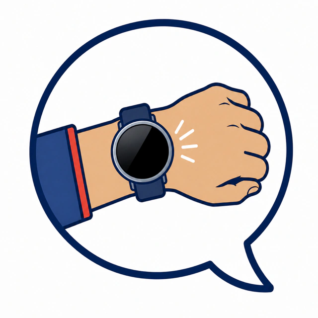
Watch Your Language
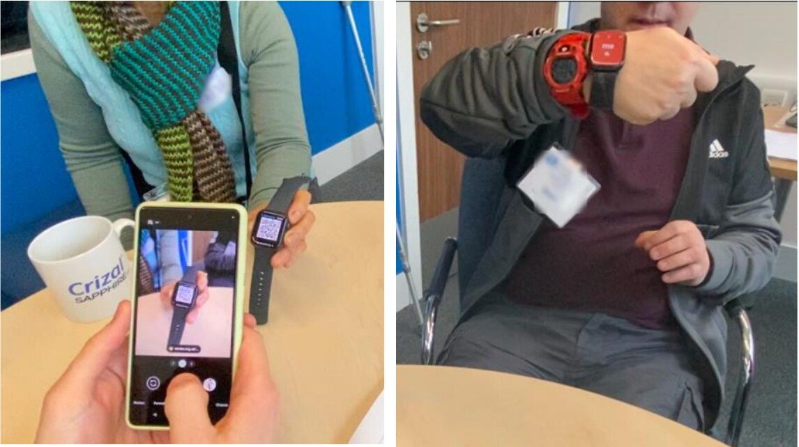
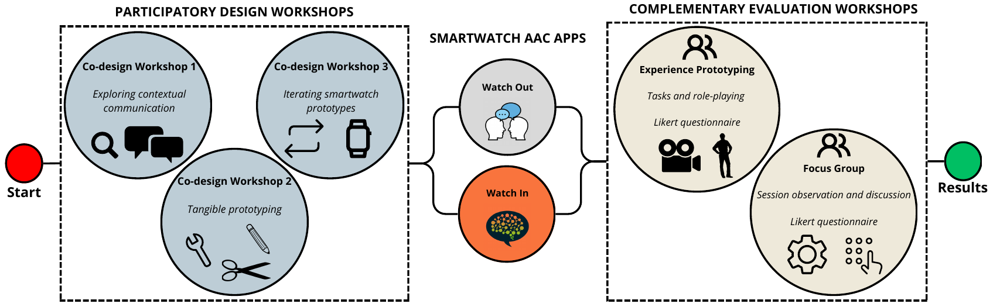
Communication aids are often designed as objects to hold between people. In conversation, that can make them conspicuous and interrupt eye contact, gesture and speech. Watch Your Language asks whether useful support can sit somewhere less intrusive: on the wrist. Co-designed with people with aphasia, the project began as two complementary Apple Watch apps. Watch Out helps in public moments when an explanation or request is difficult; Watch In offers private prompts for word-finding, memory and calming breathing. Neither speaks for the person. Each is there when conversation becomes harder.
Watch Your Language AAC
Watch Your Language AAC is a live, open-source app for iPhone and Apple Watch. The iPhone is used to write, organise and preview personal phrases; the Watch keeps them immediately available in conversation. From the wrist, someone can show a short request, explain aphasia, retrieve an important word or follow a mindful-breathing exercise.
From iPhone to Apple Watch
A phrase prepared on iPhone becomes a glanceable card on the wrist, alongside a disability badge that can be shown without beginning a longer explanation. Codable phrases, important words and preferences are stored locally and synchronized through a shared WatchConnectivity application-context layer, delivering the latest state when either device next runs.
Phrases
Saved requests are grouped into a short, familiar list so the right message can be shown quickly under pressure. On the Watch, a periodic SwiftUI timeline advances through the sentence at the chosen word interval while a long-lived AVSpeechSynthesizer produces on-device, language-aware speech.
Important words
Personally important words—such as names, locations and places of interest—can be stored and retrieved from their first letter. The most recently used items move to the front of an atomic JSON snapshot and synchronize between iPhone and Watch using last-modified timestamps.
Mindful breathing
A mindful-breathing exercise uses a paced visual rhythm and haptic cues to help ease communication anxiety. Each exercise is modelled as timed inhale, hold and exhale phases that keep SwiftUI scale animations and WatchKit haptics in step.
iPhone companion
The phone handles the slower setup work: writing a phrase, choosing an icon, checking how it will sound and adjusting voice or badge preferences. Its preview reuses the same word-timing model and speech settings as the Watch, so what is prepared on the phone matches what will be displayed and spoken on the wrist.
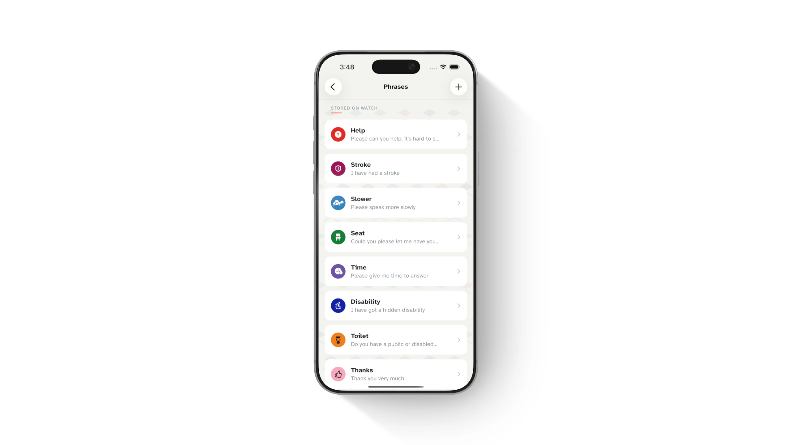
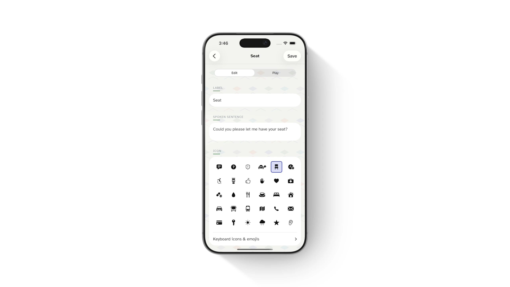
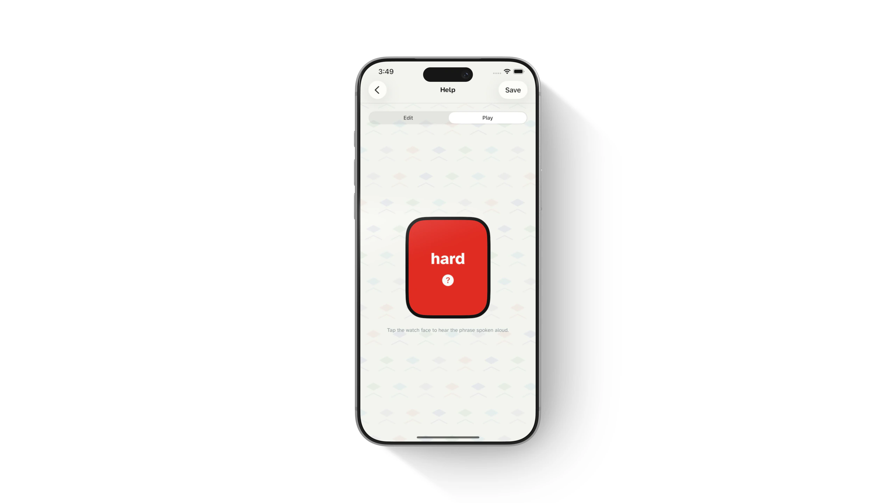
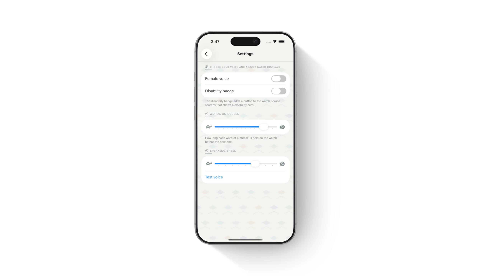
Participatory design workshops
Three workshops brought together four people with moderate to severe aphasia and a speech and language therapist at Aphasia Re-Connect.
Workshop 1 used 20 context cards and a large communication grid to compare everyday situations. Busy public places, unfamiliar people and pressure to respond quickly emerged as recurring barriers. Explaining aphasia to strangers was itself exhausting.
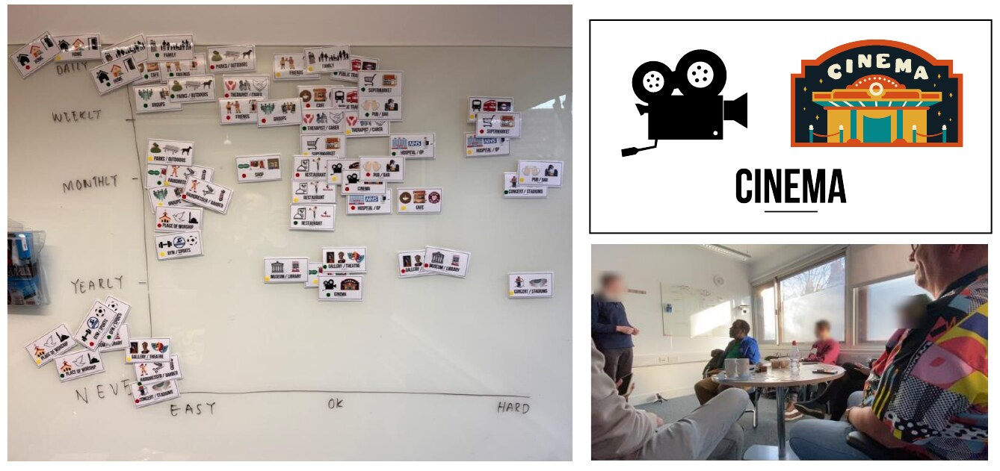
Workshop 2 used paper watch faces, cut-out wireframes and craft materials to prototype without relying on speech alone. Three ideas emerged: a word finder, a public phrase display and private support for memory and breathing.
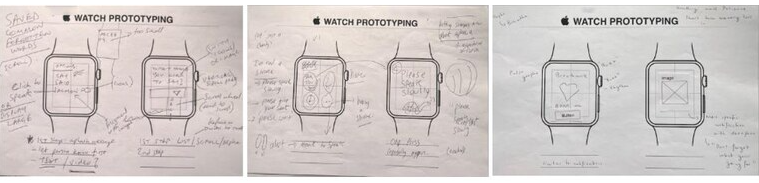
Workshop 3 tested those ideas as working prototypes on 40mm and 45mm watches. Feedback shaped the final apps—from looping large text and an attention buzzer to voice controls, a disability badge and a QR-linked aphasia explainer.
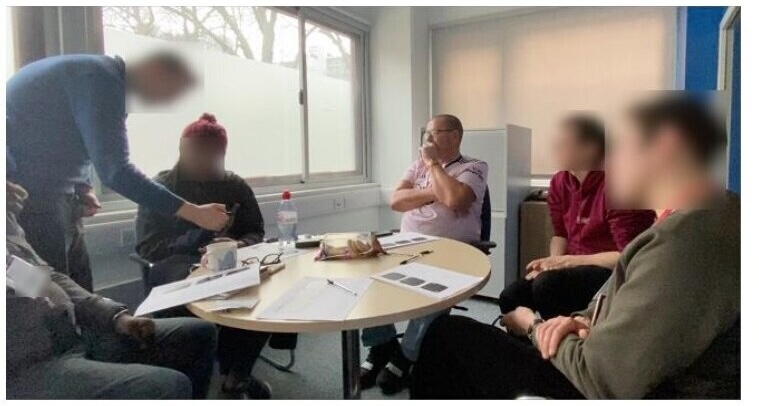
Research prototypes: Watch Out and Watch In
Watch Out is for public moments when a short, clear message can unlock the conversation. It includes eight common requests—asking for help or a seat, requesting more time and explaining a hidden disability. Each can be shown as large looping text, turned towards the other person, spoken aloud or paired with an attention buzzer.
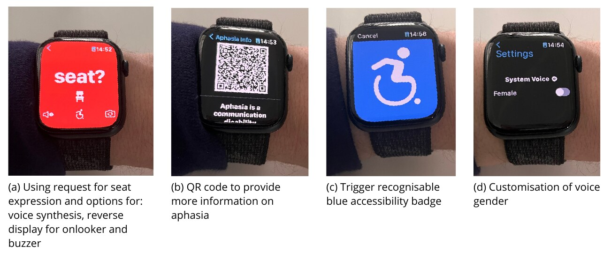
Watch In keeps support private to the wearer. It can save an important part of a conversation for later, help retrieve a word from its first letter and guide slower breathing through rhythm and haptics. A trusted supporter can also add the words that matter to that person.
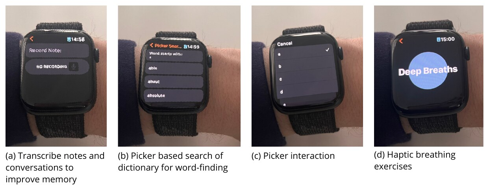
Evaluating communication, not just usability
Five people with aphasia tested both apps through role-play with an unfamiliar actor: requesting a seat, explaining aphasia and recording part of a conversation. Video analysis examined the whole interaction—not just taps—including speech, gaze, gesture and physical distance.
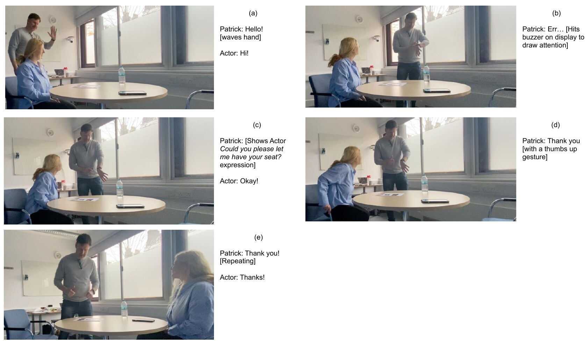
Across 244 coded interactions, speech and gesture remained central. Participants moved the watch towards the actor, paired messages with speech and held it close for QR scanning. The watch joined the conversation without taking ownership of it. The study also exposed friction: Watch In required most navigation assistance, small targets needed refinement and participants preferred the larger 45mm display. A follow-up focus group called for larger text, slower speech and more personal information.
Bottom line
Smartwatch AAC works best as a safety net: ready when communication becomes difficult, but small enough to leave room for speech, gesture, eye contact and the other person. The research received the Best Student Paper Award at ASSETS 2023. Its ideas now live in one free, open-source iPhone and Apple Watch app—with no account, advertising, analytics, subscription or developer-operated server.
The video accompanied the paper's presentation at ASSETS 2023 in New York, USA.
Open-source workshop toolkit
The original materials from the 2023 workshops: 20 communication context cards, watch-scale sketching sheets and cut-out wireframe components. Download, print and adapt them for your own co-design sessions.